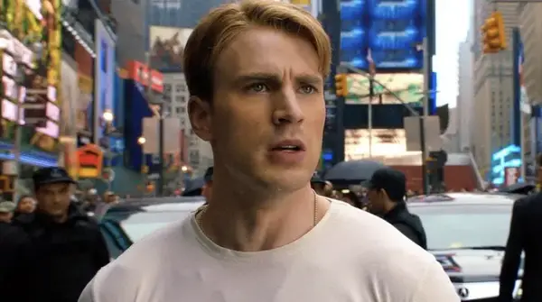

fan theories
1 theories 1
At the end of Captain America: The First Avenger, SHIELD intentionally made the mistake of having dates that already passed.
This redditor believes that SHIELD didn't mistakenly play the wrong baseball game when Steve Rogers woke up after being frozen for 70 years, but instead they did so on purpose because they were testing him.
According to them, Steve Rogers was selected for displaying intelligence and bravery, and for being clever. If Steve didn't notice that the dates had already passed, it would have raised concern and doubt for his ability to be the original super-soldier. It was most likely the first of several subtle tests to ensure that there wasn't too much damage from him being frozen for over 70 years.
2 theories 2
Bucky Barnes was brainwashed into killing Peter Parker's parents while he was the Winter Soldier.
If you've seen Captain America: Civil War, then you know that throughout the 20th century, Bucky Barnes was brainwashed into completing several assassinations when he was turned into the Winter Soldier by Zola. One of those assassinations was Tony Stark's parents, Howard and Maria Stark.
This has caused many fans and theorists to wonder who else Bucky could have killed during his 70 years as an assassin and some believe he could've even killed Peter Parker's parents. A big hint to this theory is that one of the words used to activate Bucky's mind control is "homecoming," which is also the name of the first Spider-Man film with Tom Holland.
Similarly, with Tony's parents, Peter's parents could have worked with SHIELD, making them a target for HYDRA.
You can see the full explanation of the theory HERE!
3 theories 3
The Eternals created the Ten Rings in Shang-Chi and the Legend of the Ten Rings.
During Eternals, Sersi finds out that the Eternals are not who they thought they were among other secrets about their identity. They believe they are protectors of the Earth but they are actually partly the cause of Earth's destruction. To stop this, Phastos constructs several ring devices for the Eternals to channel all of their power into.
n Shang-Chi and the Legend of the Ten Rings, when Wenwu discovers the rings, they give him powers and the ability to live longer.
Given this information, this redditor believes that "the Ten Rings came from a failed rebellion attempt by the Eternals against the Celestials several millennia earlier. While it was never explicitly said, it’s actually quite possible that the Eternals had a similar moment of revelation about their true purpose and just chose to fight against it. " They also believe that Phastos made a set of rings during this conflict just for the Eternals to fight back. They ended up failing, which led to the destruction of the planet along with their memory being wiped and other results. The rings ended up landing on Earth, which is where Wenwu found them and accessed their powers.
When it comes to Wenwu, he doesn't exhibit all 10 powers yet simply because he is still a human. This redditor believes it's likely that he still obtained enough powers to give him the edge he needed to create his empire.
4 theories 4
For Avengers: Age Of Ultron, there was a cover-up of the Avengers' involvement in creating Ultron.
This theory started by Reddit user u/eyejafjallajokull suggests that the Avengers' involvement in creating Ultron was covered up. They explain that because "Tony is never shown facing any backlash for destroying an entire country, there must have been a cover-up. The government covered it up for him and probably found a scapegoat to frame."
This could definitely be a possibility. If not, the redditor also believes that they could've easily made up some story about what Ultron was. The only hint of someone getting blamed for Ultron was Zemo, but unfortunately not for the right reasons, so why not?
5 theories 5
Instead of the Mind Stone giving Pietro his powers, he actually got them from Wanda.
According to a long-running theory, it's possible that Scarlet Witch gave Quicksilver his powers. After the release of WandaVision, especially Episode 8, the show clarifies that Wanda still doesn't fully understand the complete potential of her powers and that she could've done this without knowing it. Agatha also confirmed that Wanda could create life and alter people’s DNA, which could've been what she did for Pietro.
Throughout her time in the MCU, we've already seen Wanda's powers be the reason someone gets their abilities. Monica Rambeau has superpowers after passing through the magical Hex barrier that Wanda created three times. She didn't mean for that to happen but that also goes to show that her powers can create superpowers in others without her knowledge. If this is what happens when she uses her powers unknowingly, it is believable that Wanda gave Pietro powers at some point during their childhood.
There's much more evidence to this theory that'll leave you surprised. You can read it HERE.
6 theories 6
Thanos adopted Gamora specifically as a sacrifice for the Soul Stone, but when he grew too attached to her, he adopted Nebula to be sacrificed by Gamora instead.
According to this theory, Thanos knew the price that had to be paid for the Soul Stone, which is why he "adopted" Gamora, knowing that he had no family or loved ones of his own. However, he found himself actually coming to love her, which made it harder to put her in harm's way. So instead, he adopted Nebula and planned for the pair to get the Soul Stone together with the intention of Gamora sacrificing her sister instead.
The Reddit user explained that "this is why he constantly pits the two against each other, to be certain that Gamora would always be the winner. Every time Nebula lost, he would replace a part of her body with cybernetics. Not to make her stronger but actually the opposite, making sure she would always be at a disadvantage against her sister. This would also foster a deep resentment in Nebula, ensuring she would be willing to fight to the death even if Gamora tried to refuse. This is also why Nebula seemed to know the price of the Soul Stone but not Gamora."
During Infinity War, Nebula instantly knew Gamora was dead when Thanos returned to Vormir with the stone and not her. In the following Avengers movie, when Clint and Natasha set off for Vormir, Nebula warned them to be careful and hoped that they didn't have a falling-out on the way.
7 theories 7
Thanos gives Loki the Mind Stone in Avengers, not to get the Space Stone, but to further corrupt Loki and destabilize Asgard so Thanos could eventually invade an unprotected Nidavellir and force Eitri into making the Infinity Gauntlet.
This clever theory suggests that Thanos gave Loki the Mind Stone as a ruse to get to Nidavellir. So let’s dive in, shall we? The redditor writes, "Thanos orchestrated the further corruption of Loki and the New York attack to divide and distract the Asgardians. With the Asgardian royalty destabilized and fighting among themselves, he could attack the unprotected forge of Nidavellir, the only place capable of forging a device strong enough to hold the Infinity Stones."
As we saw in Avengers, Thanos and Loki made a deal in which Loki would use the scepter with the Mind Stone to take over Earth and Loki would give Thanos the Tesseract in exchange. But it's worth considering whether Thanos needed Loki at all when he had his own army.
Now on to the theory. This redditor believes that "Thanos specifically sought out Loki to launch the attack on Earth. The Mad Titan wasn’t aiming for the two-for-one Mind/Space Stone deal he pitched to Loki. He was secretly plotting to create a rift in the Asgardian royal family. Thanos’s ultimate goal was to invade Nidavellir and force Eitri to make the Infinity Gauntlet, but he couldn’t subjugate the forge while it still had a defense pact with Asgard.”
In a scene during Avengers: Infinity War, Eitri says to Thor, “You were supposed to protect us; Asgard was supposed to protect us.”
Their theory works because Thanos could goad the recently ostracized prince of Asgard into conquering Earth just to defy Odin’s will. The risk of losing the Mind Stone was minimal compared to the goal of obtaining the gauntlet since the stones were of little use until he had it.
Also, in Infinity War, Rocket questioned if Nidavellir is real to Thor because that place is where they make the most powerful and horrific weapons ever to torment the universe. The creator of this theory believes that if Rocket knew about Nidavellir, then Thanos would probably know of the forge.
The only obstacle in the way was the Asgardian army. Knowing his army wasn't a match for it, Thanos sought out Loki and used him to create an opening. As a result, he created a rift between Loki, Thor, and Odin, and kicked off the Ragnarok destruction prophecy.
8 theories 8
Iron Man Didn't Have To Die

A question that even characters within the Marvel universe have been asking: Was it possible for Tony Stark to live? After viewing 14,000,605 different realities, Doctor Strange claims to have only seen one possible future that ended well. But, given that the Ancient One couldn't see beyond the point of her death, it's possible that Iron Man could have lived and the Avengers still could have won, if Doctor Strange died.
9 theories 9
Odin Tried To Collect The Stones

As a king, it's almost irresponsible not to look for the Infinity Stones in the Marvel universe. And given that Hela's mother disappeared, and the Asgardian vaults had a replica of the Infinity Gauntlet, it's certainly a possibility that Odin sacrificed her for the Soul Stone.
And really, what sort of king would Odin be if he didn't at least try to get his hands on the Infinity Stones? After all, they are a tool that can completely reshape reality. In the wrong hands, it could wipe out civilizations. In the right hands, it could turn war into a long-forgotten nightmare. As a desperate conqueror, it makes sense that Odin would have at least tried to collect the Stones.
10 theories 10
The Super Soldier Serum Used A Wakandan Herb

As a formerly secret society nestled in a shielded enclave, Wakanda managed to keep its Heart-Shaped Herb a closely held secret. If Captain America's Super-Soldier serum was the product of Heart-Shaped Herb technology, that explains why no other serum before it worked and why Hydra had so much difficulty replicating it.
It also explains why Captain America and the Black Panther have such similar powers and why America was never able to produce another serum. If true, it would make Captain America a variant of the Black Panther. It could also mean T'challa's ancestors were always trying to do the right thing, even if they were forced to keep their nation secret.
11 theories 11
Dwarves Made The Black Order's Weapons

With extremely powerful weaponry capable of holding up against the might of the Mind Stone, it's possible that the dwarves of Nidavellir made weapons for Thanos' men. After all, it makes a lot of sense. The dwarves were the original creators of the Infinity Gauntlet, meaning that they were under Thanos' control. Given that, it's unlikely that Thanos would receive an extremely powerful weapon and then leave without also arming his men.
Considering that the weapons also function like Mjolnir and come when the Black Order call them, it's almost certain that they were dwarf-made tools. They likely would have been the only holders of dwarf-made weapons too. Unfortunately for them, leaving one dwarf alive was a mistake that came back to bite them, thanks to Thor's brilliant plan.
12 theories 12
Bruce Banner Saw Natasha In The Soul Stone

In undoing Thanos' snap, Bruce suffered a significant physical injury, but is it also possible that he suffered mental anguish too? While it's often considered one of the worst relationships in the Avengers movies, the Hulk did love the Black Widow, and it is possible he saw her when undoing the Snap.
After all, when using the Soul Stone, it's generally understood that the users get a scene with their loved ones. Given that Bruce had nothing left except Natasha, it's likely he would have seen her when he was bringing everyone back. This would be especially tragic, given that they'd only just lost her. It would also add some added tragedy, given Bruce had to suffer one last emotional trauma before bringing back half the universe.
13 theories 13
Tony's Suit Breaks Down Easily Because Of Intentional Planning

In early Iron Man movies, the suit wasn't exactly as fragile as it seems to be in later movies. Some fans suspect that this could be because of Stark's own engineering. After all, if he's building lighter and more dexterous armor, it makes sense that it may not survive a fight as well as it does.
However, fans should also realize that Stark was facing very different threats in early films as opposed to later ones. The villains in the first Iron Man weren't nearly as powerful as Ultron or Thanos. It's more likely that his malfunctioning suits came as a result of stronger villains, rather than weaker alloy.
14 theories 14
Wanda's Chao Magic Unleashes The Mutants

Fans are super excited to see what unleashes in Doctor Strange in the Multiverse of Madness, with Wanda Maximoff (one of the most powerful Avengers) set to return. However, something dark may be spewing within Wanda, considering her final transformation as the Scarlet Witch in WandaVision and possession of the Darkhold.
One of the wildest theories suggested by fans like u/Way-Extra is that Wanda's chaos magic may unleash the mutants. Furthermore, Reddit user u/Quiet_Effective7234 suggests that the acronym Multiverse of Madness spells out as "MoM," believing that Wanda could be the mother of the mutants. The theory may seem fanciful, but even the impractical could be plausible.